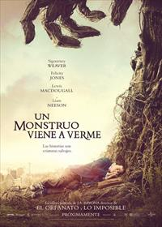
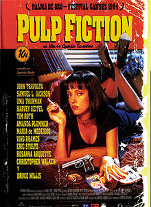
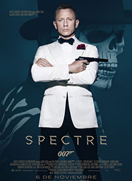

CARTELERA
|  | Un monstruo viene a verme |
Conor sólo tiene doce años, pero sabe perfectamente qué va a pasar poco después de la medianoche. Va a tener la misma pesadilla otra vez, esa “pesadilla llena de oscuridad, de viento y de gritos”. Ha sido así desde que su madre cayó enferma. Aunque esa noche parece diferente. Conor escucha una voz que le llama desde el jardín. Frente a la casa hay una antigua iglesia, con su cementerio y un viejo tejo. Cuando Conor se asoma por la ventana, el árbol se ha transformado en un monstruo, un gigante de ramas y hojas, poderoso y antiguo. El monstruo le dice a Conor que ha escuchado su llamada y que está allí para ayudarle. Para ello le contará tres cuentos pero cuando haya terminado le tocará a Conor contar el suyo. Y este será el cuento más difícil de todos, la pesadilla que se repite todas las noches, su propia historia, la verdad.

|
Tenet |
En el mundo del espionaje internacional, un hombre (John David Washington) prefiere morir antes que entregar a sus compañeros. Tras conseguir superar esta difícil prueba, este hombre tendrá una importante misión: evitar una nueva amenaza mucho más peligrosa que la tercera guerra mundial. La clave será una sola palabra: TENET. Será entonces cuando tenga que hacer frente a un terrible villano (al que da vida Kenneth Branagh), un tipo que parece que puede viajar en el tiempo y mandar información al futuro. Ayudado por la mujer de éste (interpretada por Elizabeth Debicki), el protagonista trama un plan para salvar la vida en la Tierra tal y como la conocemos.

|
Lo imposible |
Maria (Watts) y Henry (McGregor), se encuentran pasando las Navidades en un hotel de Tailandia junto a sus dos hijos, Simon y Thomas. Lo que parece una mañana normal junto a su familia, se convierte en un infierno al ver cómo de repente, frente a ellos se alza una enorme columna de agua que termina engulléndolos y arrastrándolos, llevándolos a cada uno por un lado diferente.
Campeones |
|
Marco (Javier Gutiérrez) se considera un tipo normal, claro que no es demasiado optimista y además tiene un miedo atroz a crecer de verdad. Es el segundo entrenador de un equipo profesional de baloncesto. Tras estrellar su coche al conducir ebrio, se ve obligado a entrenar a un grupo de chavales con discapacidad intelectual por orden de la juez. A regañadientes comienza lo que para Marco significa un trabajo forzado. Sin embargo, cuanto más tiempo pasa con ellos, más se da cuenta de que estos chicos con discapacidad son felices e independientes más allá de su enfermedad. ¿Quién es entonces el normal?

|
IT |
Han pasado casi 30 desde que el Club de Perdedores formado por Bill, Berverly, Richie, Ben, Eddie, Mike y Stanley se enfrentaran al macabro y despiadado Pennywise (Bill Skarsgård). En cuanto tuvieron oportunidad abandonaron el pueblo de Derry, en el estado de Maine, que tantos problemas les había ocasionado en el pasado. Sin embargo, ahora de adultos parece que no pueden escapar de su antigua vida. Una nueva época estival llega y todos ellos deberán enfrentarse de nuevo al temible payaso y descubrir si de verdad están preparados para superar sus traumas de la infancia.
|  | Pulp fiction |
Jules Winnfield y Vincent Vega son dos asesinos a sueldo que trabajan a las órdenes del temido gángster Marsellus Wallace, quien les encarga la importante misión de recuperar su misterioso maletín, que ha sido robado. Ahí empezarán todos sus problemas. Los dos criminales son polos opuestos que deberán trabajar juntos para cumplir su cometido. De forma paralela, Vincent tendrá que hacerse cargo de Mia Wallace, la peculiar novia de su jefe, a petición del mismo, mientras él pasa unos días fuera de la ciudad. Su compañero Jules le recomienda que vaya con cautela, pues la atractiva mujer le puede meter en problemas. Mientras, el boxeador Butch Coolidge debe perder una importante pelea, pues ha sido sobornado por Wallace para participar en este combate amañado, y la pareja formada por Pumpkin/Ringo y Honey Bunny/Yolanda decidirá atracar un establecimiento debido a su lamentable situación laboral.
|  | Spectre 007 |
Un críptico mensaje del pasado envía a James Bond a una misión no autorizada, para destapar una misteriosa y siniestra organización. Esta nueva amenaza para el Gobierno británico podría acabar con la paz y la seguridad de todo el planeta. Por eso, para obtener la información necesaria y desactivar los planes terroristas, los servicios secretos encargarán al conflictivo y desobediente Agente Bond esta misión. 007 viajará a Ciudad de México y finalmente a Roma, donde conocerá a Lucia Sciarra, la bella y peligrosa viuda de un criminal infame. Cuando Bond se infiltra en una reunión secreta, descubrirá una siniestra organización conocida como SPECTRE. Será a medida que se adentre en el corazón de SPECTRE, como averiguará la conexión escalofriante que existe con el enemigo que busca: Franz Oberhauser.